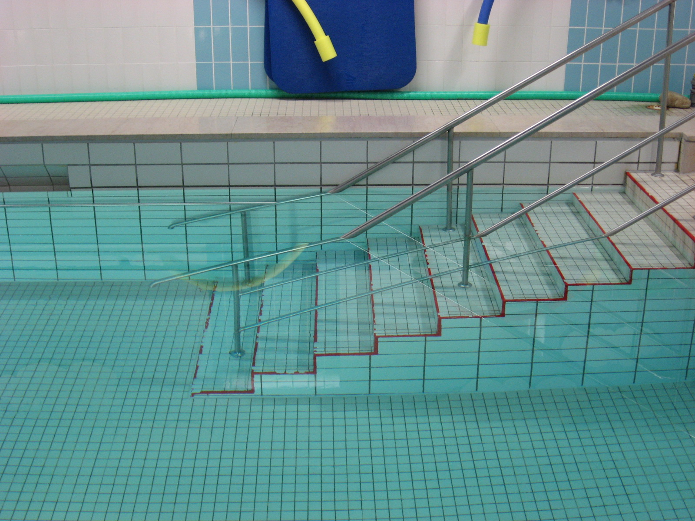
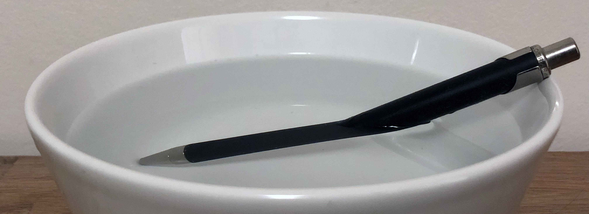
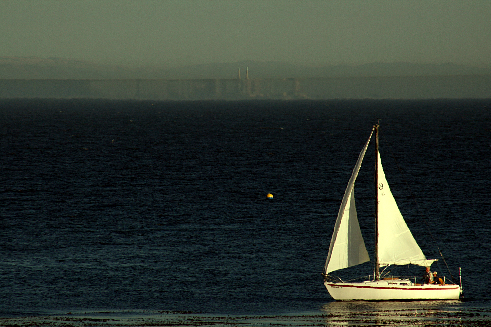
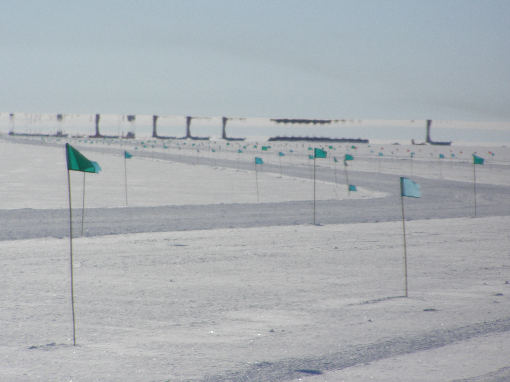
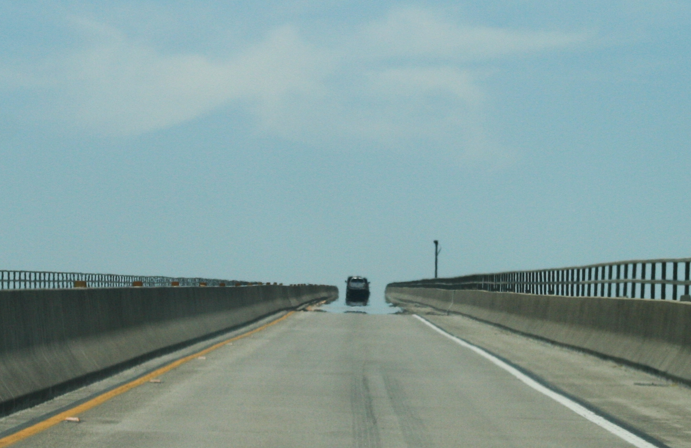

光的反射
先讀提問，再揭示模型畫面

角度由法線量取。請指出入射角與反射角。
波前折射、視深與海市蜃樓先在學習單畫預測，再打開模型畫面；斯乃爾定律採幾何作圖推導。這些定格屬於模型圖，真實現象照片另見教材。若教室完全沒有顯示設備，可事先列印紙本教材與學習單。
角度由法線量取。請指出入射角與反射角。

先辨認點波源與圓弧波前。看半徑方向、切線及直角記號：前進方向始終垂直波前，波長沿半徑量取。


教師示範：追蹤入射波前、接觸與反射，口頭比較間距與角度。本段不另設學習單。

比較圓形波各處的反射方向，並找出鏡像波源。每一處反射都遵守反射定律。

教師定性示範：兩區速率不同，最短時間不一定是最短距離；不設填答或距離／時間紀錄表。

Q1：入射角25°、波速比0.5。先畫預測再看模型；折射角約12.2°，頻率不變。

Q1：入射角25°、波速比1.25。折射角約31.9°，波長為原來的1.25倍。

Q1：入射角0°、波速比0.5。波前間距減為一半，傳播方向不偏折。

先比較光速與波長，再用 n = c/v 說明。折射率沒有單位。

先找 C、D 的直角與共同斜邊 AB。θ₁ 的對邊是 BC；θ₂ 的對邊是 AD。完整公式見紙本第8–9頁。


先看實拍，再畫光路與所見位置預測。畫完後才揭示下方完整模型答案。

依紙本題圖先畫預測。實深100 cm、初始入眼方向與鉛直夾角45°；畫完後查看完整實際光路、反向延長虛線及局部虛像。實線與虛線代表不同意義。


先看實拍，再畫光路與所見位置預測。畫完後才揭示下方完整模型答案。

折射率隨高度變化，光路向折射率較大的下方彎曲。與均勻介質的直線光路比較。

比較折射率剖面與入眼方向。倒像或變形須比較物體上下各點的光路，不能只看一條光線。

比較熱路面附近較小的折射率與上方較大的折射率，判斷光路向上彎曲及入眼方向。此對照不列課堂必答作圖。